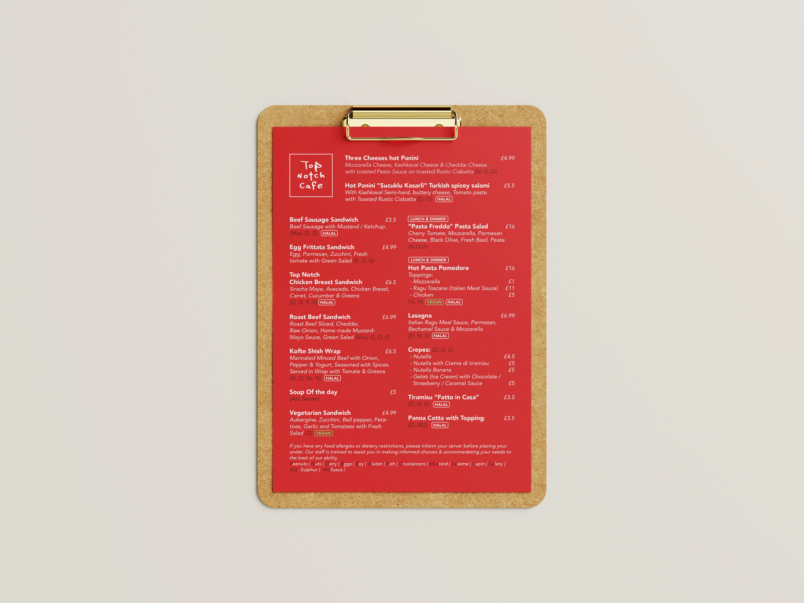
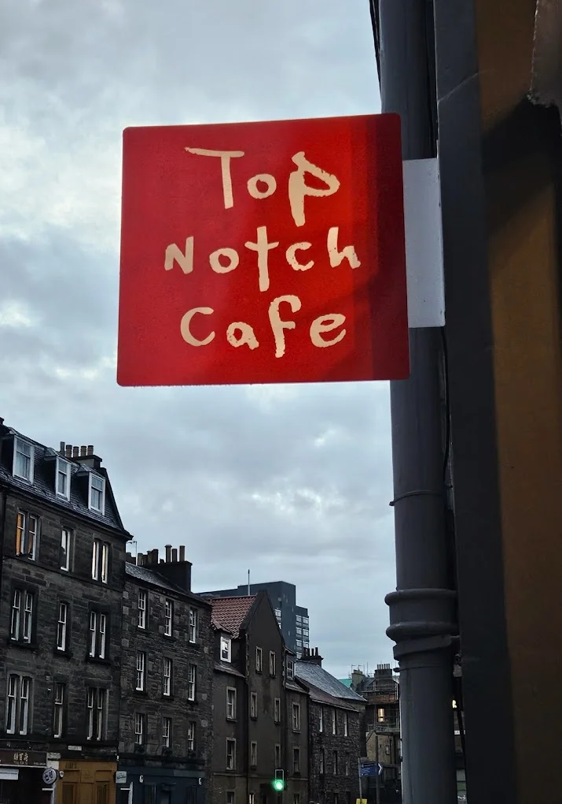
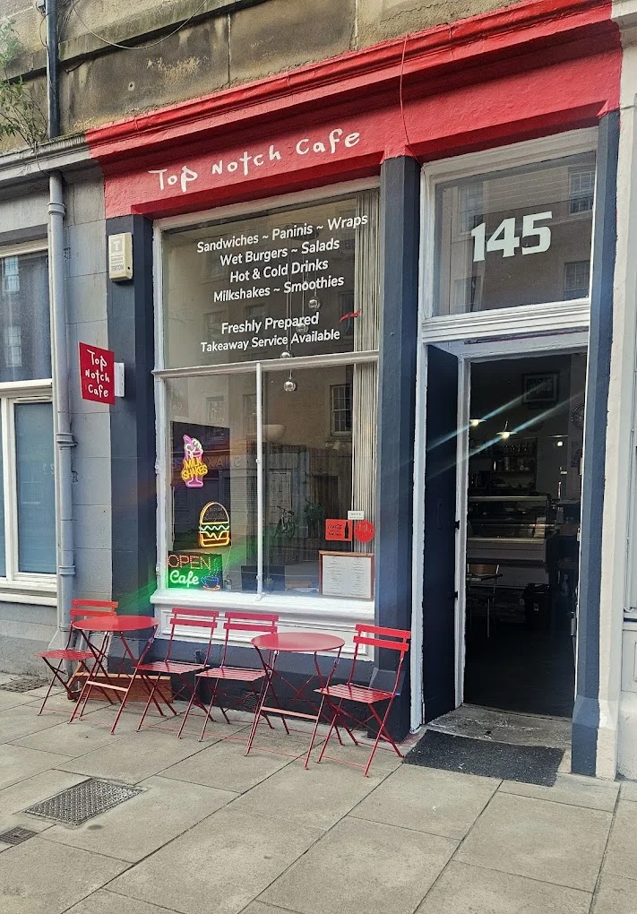

Requirements:
- Din A5 Format, but needs to fit the same Content
- Needs to fit to established Corporate Design
- Rebuild the Logo (Sign)


Closed!
As of 2025, the Top Notch Cafe is not in buisness anymore... RIP